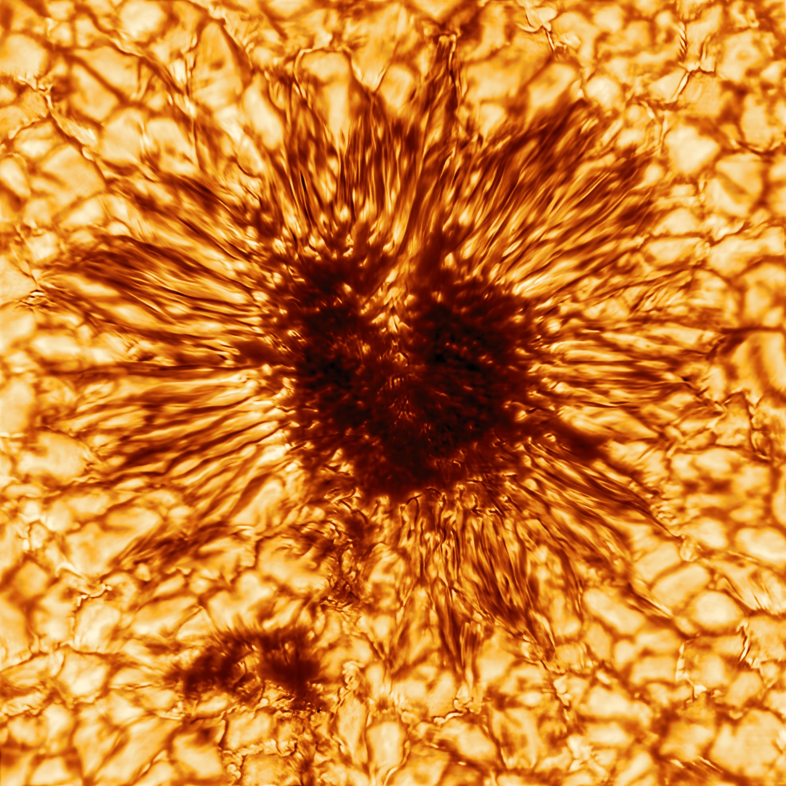

Prospective PhD students
Explore solar physics.
Observational and computational research at Queen’s University Belfast.

Let’s discuss your interests.
I am open to supervising PhD students in observational and computational solar physics. I am also open to interdisciplinary projects. Projects can be tailored to students with backgrounds or interests in astrophysics, data analysis, numerical modelling or machine learning.
Prospective applicants are welcome to contact me to discuss possible projects and funding opportunities.
Contact Ryanryan.campbell@qub.ac.uk
Potential research areas
- Machine-learning and Bayesian methods for solar spectropolarimetric inversions
- Magnetic topology in the quiet Sun, sunspots and active regions
- Spectropolarimetric and spectroscopic diagnostics of solar flares
- Multi-line and non-LTE radiative-transfer modelling
- Analysis of observations from DKIST, Sunrise, and other high-resolution solar facilities
- Combining magnetohydrodynamic simulations, forward modelling and observations to test magnetic-field diagnostics
Supervision
Curiosity, independence and ambition.
I meet with students weekly or fortnightly. I expect students to read the literature independently and think deeply about their research questions, methods and results.
I strongly encourage the use of AI, alongside careful questioning and verification of its outputs. It should be a co-pilot, not the driver: students should retain ownership of their reasoning and understand the work they produce.
Students should be willing to travel to conferences and undertake research stays abroad. I welcome ambition and a willingness to engage with the wider research community.
I encourage a healthy approach to work-life balance.
Start a conversation.
If useful, include your research interests and academic background in your email. Do not use ChatGPT to write it!